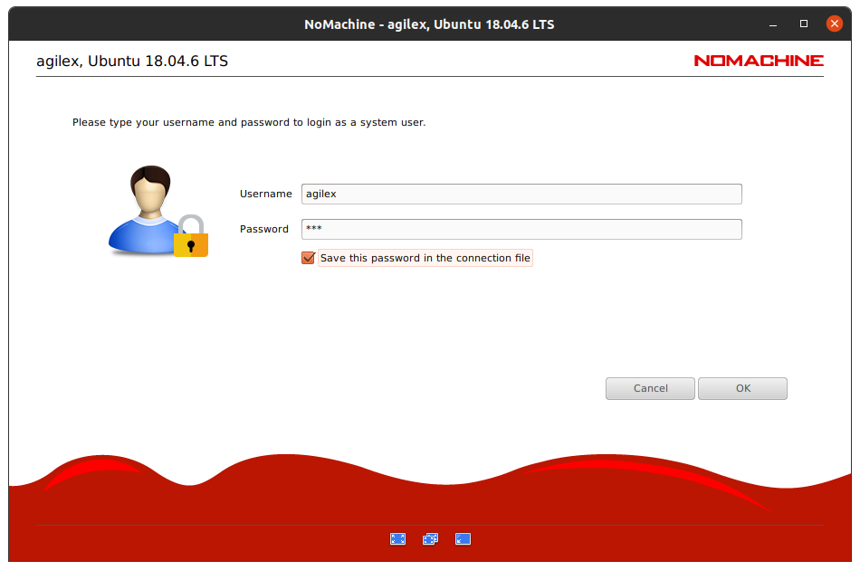
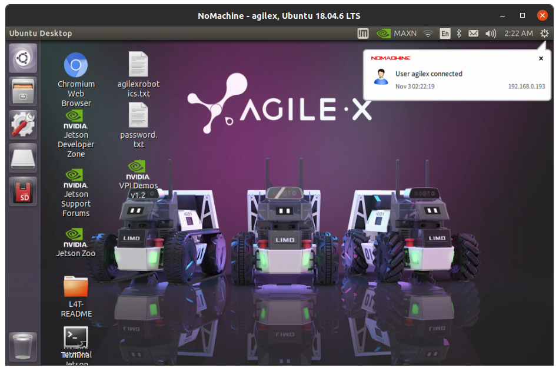
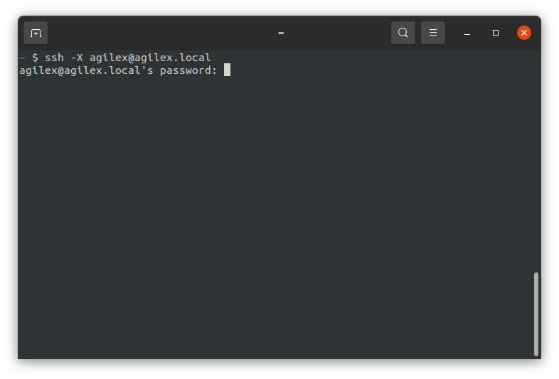

Setting Up Remote Development
Instead of having to hook up a mouse and keyboard to your LIMO every single time you want to use it, you have the option of doing remote development. There are many ways to accomplish this, but we will present a few options here.
Remote Desktop (NoMachine) Setup
NoMachine is a remote desktop software developed by the Luxembourg-based company of the same name. It comes pre-installed on the LIMO for your convenience. The directions for setting up a connection between your remote computer and the LIMO are below:
Download and install the version of NoMachine matching your remote computer’s OS from the NoMachine download page. Follow the instructions for installation.
Make sure that your remote computer and your LIMO are on the same Wi-Fi network.
Open NoMachine on your remote computer.
Choose the LIMO’s Jetson Nano from the list of connection options.

Click “Yes” to verify the host authenticity.

Enter the username
agilexand the passwordagx. You can choose the save the password to the connection file if you’d like.Click “OK” to proceed through the tips.
You are now able to remote into your LIMO through NoMachine.

Linux Secure Shell Protocol (SSH) Setup
Basic secure shell protocol (SSH) allows a user to access command-line interface on a device from a remote computer.
Install the openssh-client package on your remote linux computer.
$ sudo apt install openssh-clientInstall the openssh-server package on your LIMO.
$ sudo apt install openssh-serverMake sure that your remote computer and your LIMO are on the same Wi-Fi network.
SSH into the LIMO from your remote computer with the display forwarding flag
-X. The password isagx.# ssh -X username@hostname.local $ ssh -X agilex@agilex.local
Note
If prompted, continue to connect despite not being able to verify the authenticity of the host.
Note
If prompted, accept the SSH key.
Note
The
-Xflag indicates to OpenSSH that we want to do display forwarding, meaning that OpenSSH will forward graphical application to the client from the server. On the server side, X11Forwarding yes must be specified in /etc/ssh/sshd_config. Note that the default is no forwarding (some distributions turn it on in their default /etc/ssh/sshd_config), and that the user cannot override this setting.Once logged in to the LIMO, you can open multiple SSH’ed terminals using the command below.
$ gnome-terminal &
Sometimes, this doesn’t work. In that case, use the command from this Ask Ubuntu answer.
$ /usr/bin/dbus-launch /usr/bin/gnome-terminal &